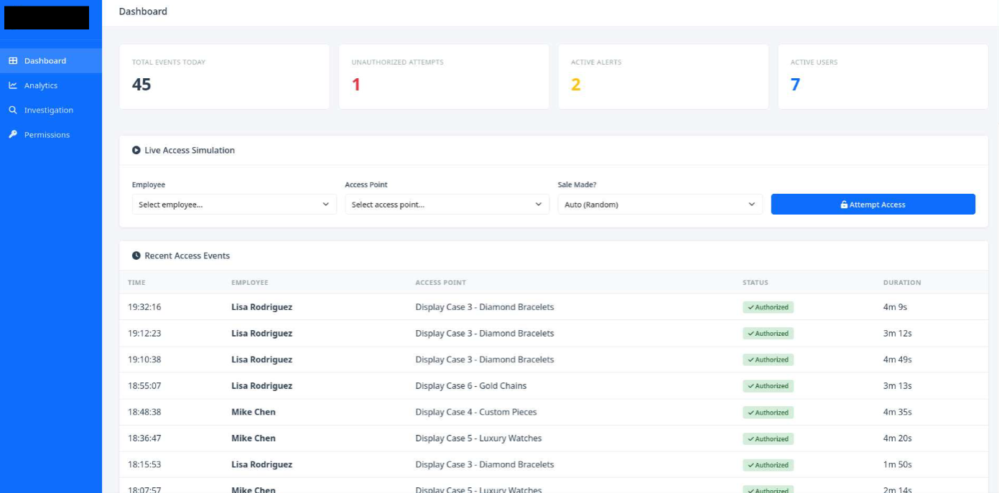
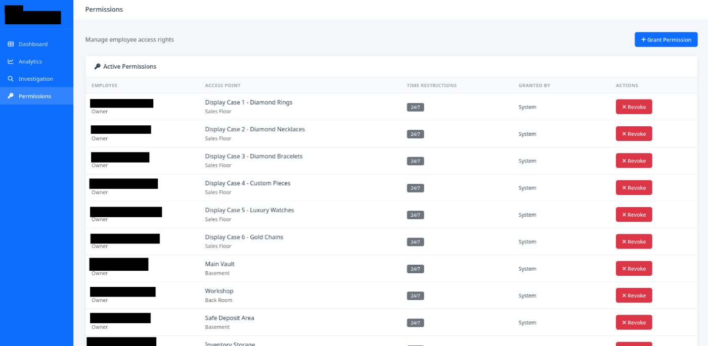
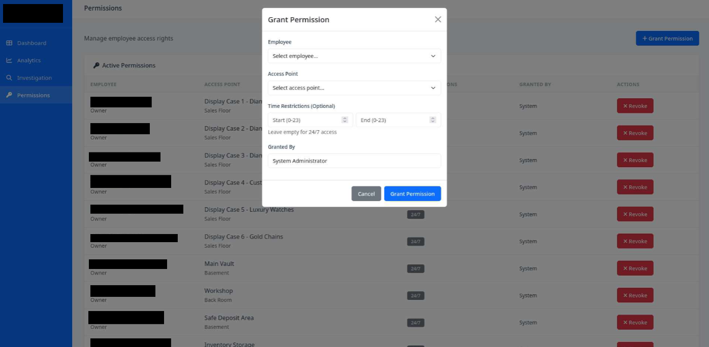
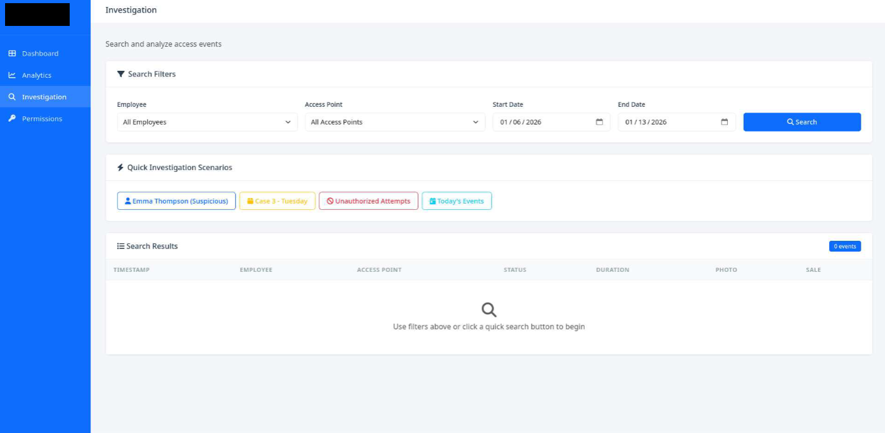
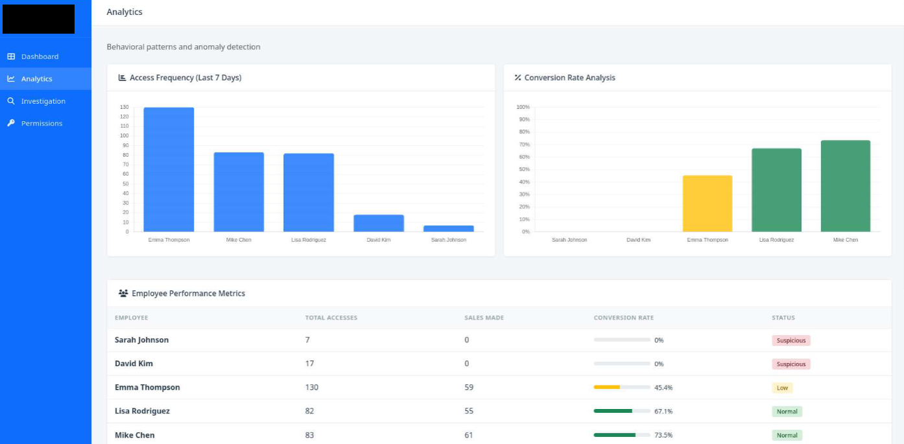

Access Control & Audit System
Enterprise-Grade Security for High-Value Inventory Management
A working prototype of a role-based access control system with tamper-evident audit logging for high-value inventory.
- When
- December 2025 – 2026
- Kind
- Independent Security Project
- Result
- Working prototype
- Topics
- access control, rbac, audit logging
Overview
I designed and built a working prototype of a role-based access control (RBAC) system with tamper-evident audit logging for environments holding high-value inventory. The problem I set out to solve is a familiar one in luxury retail: staff need fast access to merchandise, but when something goes missing, reconstructing who touched what from manual logs can take hours — and everyone knows the logs are inconsistent, so they don’t deter much.
My approach was to make every access event answer five questions automatically — who, what, when, where, and why — write them to a log that can’t be quietly edited after the fact, and put a query interface on top so an investigation that used to take an afternoon takes seconds.
What it’s built to do
Seconds investigation time
An access query returns in under a second what used to mean hours of manual log review.
Every event logged
All access runs through the system, so by construction nothing happens off the record.
Verifiable audit trail
Append-only hash chaining makes any after-the-fact edit detectable.
These describe how the prototype is designed to behave — not a measured production benchmark.
How I built it
Access control & enforcement
A default-deny RBAC model: users get roles (Sales, Manager, Security, Admin), roles map to granular permissions over inventory categories and locations, and a real-time decision engine evaluates user + role + resource + time on every request. Off-hours and emergency access require an explicit, logged justification rather than a silent override.
Immutable audit log
Each entry is append-only and carries a hash of the entry before it, so any attempt to rewrite history breaks the chain and shows up immediately on verification. Logs are encrypted at rest, and events stream to the analysis engine as they happen.
Log Entry N
Timestamp: 2025-01-15T14:23:45Z
User: j.martinez@store.example
Action: ACCESS · Resource: /inventory/item/12345
Previous Hash: a3f5c8b2…
Current Hash: 9d4e1a7f…Behavioral anomaly detection
I baselined normal access patterns per user and role, then flagged deviations — off-hours activity, unusual categories, bulk access — with a weighted risk score so the security team’s attention lands on the few events that actually warrant it.
Investigation interface
Plain-language queries (“who accessed item X in the last 30 days?”), a timeline view that reconstructs access sequences, and one-click audit exports for insurers or regulators.
The interface
I built a working prototype to prove the workflow end to end. A few of the screens:





What I took from it
The technical core is the hash-chained log, but the lesson that stuck was about communication: framing the system as “investigation time, from hours to seconds” landed with stakeholders far better than talking about cryptographic integrity. The same architecture maps cleanly onto law firms (file-access walls), healthcare (HIPAA access trails), and finance (MNPI controls) — any place that needs to prove who reached what, and when.
Stack
- Backend
- Python (FastAPI) · PostgreSQL (ACID audit tables)
- Audit
- append-only tables with cryptographic hash verification
- Cache
- Redis (sessions, permission lookups)
- Crypto
- AES-256 at rest · TLS 1.3 in transit · JWT with refresh
- Frontend
- React
Evidence & availability
This is a prototype built on synthetic data — there are no real client details to protect, so a live walkthrough of the working build is available on request.